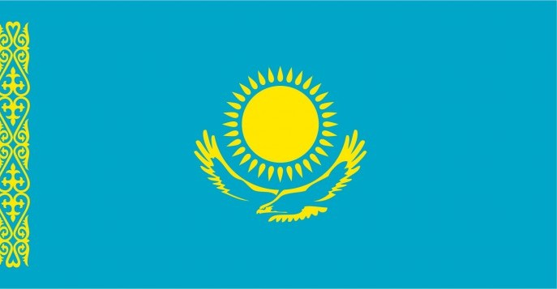

哈萨克斯坦的语言
点击国旗查看各语言的使用领域：

哈萨克语（Kazakh）
哈萨克语是哈萨克斯坦的国语，主要用于国家行政机关、学校教育、电视广播和官方文件中。它是民族文化和国家认同的重要象征。

俄语（Russian）
俄语在哈萨克斯坦被广泛使用，主要应用于商业交流、城市生活、科技领域以及多民族之间的日常沟通，是重要的跨民族交流工具。

英语（English）
英语主要用于国际交流、科技、商业合作、高等教育和旅游行业。随着全球化的发展，越来越多的年轻人开始学习和使用英语。
← 返回首页